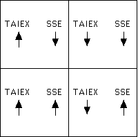
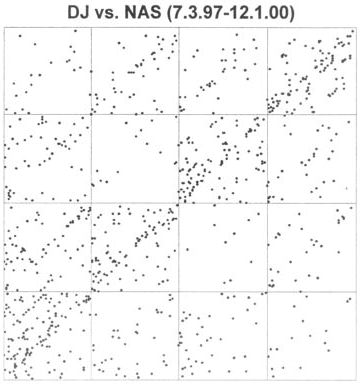
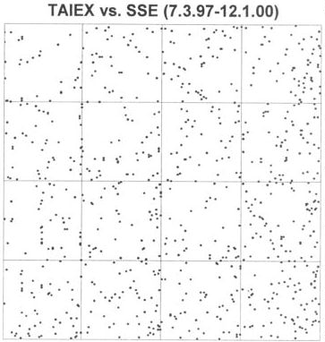

| In his project for the autumn, 2000, fractal geometry
course, Enoch Wu used driven IFS to compare the Taiwan stock market (TAIEX) and the
Shanghai Securities Exchange (SSE). Wu proposed a novel application of IFS: |
| if both markets rise, apply T1(x,y) = (x/2,y/2), |
| if TAIEX falls and SSE rises, apply T2(x,y) = (x/2,y/2) + (1/2,0), |
| if TAIEX rises and SSE falls, apply T3(x,y) = (x/2,y/2) + (0,1/2), and |
| If both markets fall, apply T4(x,y) = (x/2,y/2) + (1/2,1/2). |
|
| That is, in relation to the driven IFS |
|  |
| If the markets generally move together, we should see many applications
of T1 and T4, thus many points lying along the diagonal from
lower left to upper right. |
| On the left is the driven IFS for the Dow Jones and
NASDAQ, from July 3, 1997 to December 1, 2000, a total of 861 data points. On the
right, the driven IFS for the TAIEX and the SSE. |
|  |
 |
 |
|
| Indeed, we see a strong trend along this diagonal for the DJIA and NASDAQ, not so
strong for the TAIEX and the SSE. |
|